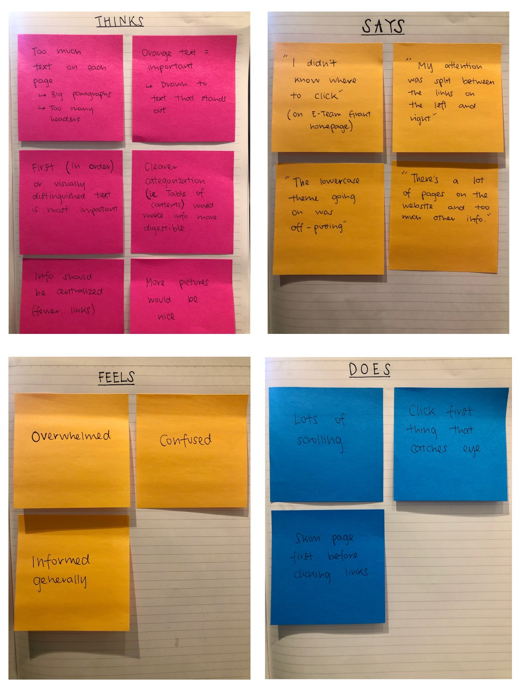
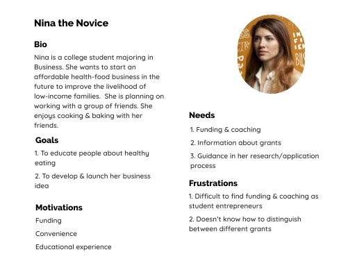
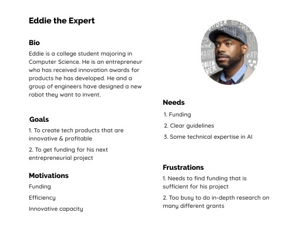

Project Description:
VentureWell is an organization that provides grants and support for students & educators driving innovative entrepreneurial projects. For my capstone project at UMSI, my team has been paired to work with VentureWell to improve the usability of the E-Team Grant Program section of their website. We will redesign the VentureWell website’s E-Team Grant section to better guide users through the application process and meet their needs (access to information, resources, convenience, etc.) and improve the current and prospective users’ experiences and understanding of the program.
Research Plan and Methodologies:
Method #1 - Heuristic Evaluation- Purpose: To identify aspects of the VentureWell website that violate the series of heuristics that we outlined
- Methodology: Each member walked through the website and identified issues related to the heuristics.
- Purpose: To compare VentureWell’s products & offerings to similar organizations and identify what sets it apart from competitors.
- Methodology: We identified four of VentureWell’s competitors and researched how VentureWell matches up to them with regards to six categories: Number of deadlines for grants potential funding, Training, Mentorship, Team size, Institution membership, and Application requirements
- Purpose: To gather qualitative data on users interactions with the website and evaluate the effectiveness of the current user experience in allowing users to complete important tasks.
- Methodology: We conducted usability tests with students at the University of Michigan. We presented each participant with the same set of tasks, and through observation, evaluated their success/failure in completing each task.
- Purpose: We will be conducting interviews with prior VentureWell E-Team grant applicants to get insight into their experiences.
- Methodology: we will conduct a series of interviews to inquire about their experiences
Research Results:
We created an empathy map that represents the collective thoughts, feelings, actions, and voices of the usability test participants.
Themes & Insights
After analyzing our research, we found many common themes between different users’ pain points on the VentureWell site. These fell into three main categories:
- Unclear Navigation of Pages- users were confused by the categories under the navigation bar
- Inefficient Presentation of Information- information seems cluttered and it’s hard to find what you need
- Not-User Friendly Visuals- the graphics being used onsite are hard to read
User Personas
After conducting our research, we brainstormed two user personas for the VentureWell grant application
 UX Requirements
We identified four requirements to plan for the design phase of our project and help us complete our goals
- Comprehensive, clear navigation throughout website (terminology & categorization)
- Prioritization and clear communication of most important program information
- Program information & guidelines are accessible and effectively differentiated for different types of users
- Consistent visual layout & organization of elements throughout website
Design Phase
We are currently in the process of designing prototypes for the VentureWell site.